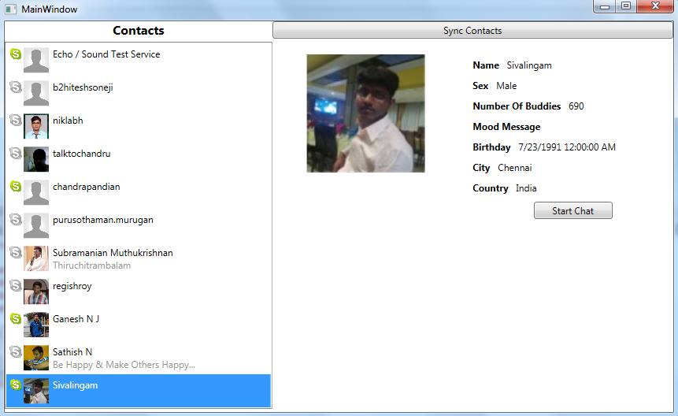

Skype Integration in WPF Applications
Introduction:
Skype has become one of the prominent application for video calling, messaging etc. Intefacing skype with other application has become a necessary feature these days for application that involves the capability to chat, call etc. Skype has a good support to integrate it with web applications. But when it comes to windows application the support is very minimal. This sample is developed to integrate skype with WPF application using a COM interface.
How to Run the Application:
1.) Install Skype. You can Download Skype from the following url:
http://www.skype.com/en/download-skype/skype-for-computer/
2.) After installing the Skype Application. Locate the COM Component Skype4Com in your machine. If you have Skype installed in C drive. It will be located in “C:\Program Files (x86)\Common Files\Skype”
3.) After Register the Component to Windows Machine using the following steps
For 32-bits OS:
- copy Skype4COM.dll to your c:\windows\system32 folder
- Open an Elevated CMD.exe (right click cmd.exe and choose 'Run as Administrator')
- Set current Path to C:\Windows\System32
- execute regsvr32.exe Skype4COM.dll
For 64-bits OS:
- Copy Skype4COM.dll to your c:\windows\SysWOW64 folder
- Open an Elevated CMD.exe (right click cmd.exe and choose 'Run as Administrator')
- Set current Path to C:\Windows\SysWOW64
- execute regsvr32.exe Skype4COM.dll
4.) Now open the “SkypeIntegration.sln” in visual studio 2012. In the References section you will see the SKYPE4COMLib Missing. Now Right click “References -> Add Reference”
5.) In the Reference Manager Dialog. Under “COM -> Type Libraries” Section you can see Skype component registered. Select the “Skype4Com 1.0 Type Library” and Click OK.

6.) Now Run the Application.
Screenshot:

You can read the related wiki article here